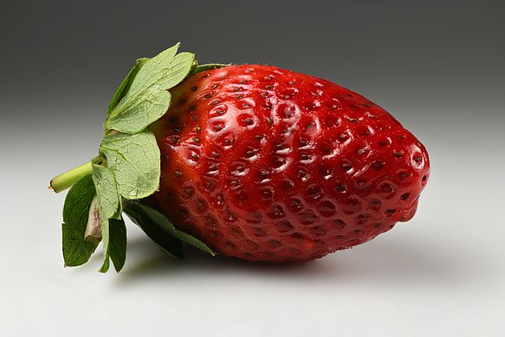

Strawberry

The garden strawberry is a widely grown hybrid species of the genus Fragaria, collectively known as the strawberries, which are cultivated worldwide for their fruit. The fruit is widely appreciated for its characteristic aroma, bright red color, juicy texture, and sweetness. It is consumed in large quantities, either fresh or in such prepared foods as jam, juice, pies, ice cream, milkshakes, and chocolates. Artificial strawberry flavorings and aromas are also widely used in products such as candy, soap, lip gloss, perfume, and many others.
Production
| Strawberry production – 2020 | |
|---|---|
| Country | Millions of tonnes |
| China | 3.3 |
| United States | 1.1 |
| Egypt | 0.6 |
| Mexico | 0.6 |
| Turkey | 0.5 |
| Spain | 0.3 |
| World | 8.9 |